不分類型獎項
7 個獎項最佳專輯獎

歌佈靈的奇妙電台
小人
製作名單
製作人：小人
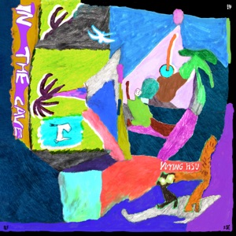
In the Cave
許郁瑛
製作名單
製作人：許郁瑛、程杰、林偉中

你會永遠活在我的歌裡
蘇珮卿
製作名單
製作人：蘇珮卿
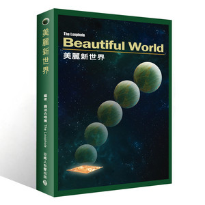
美麗新世界
露波合唱團
製作名單
製作人：李權哲
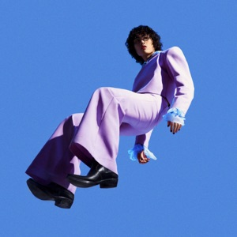
TALENT
鶴 The Crane
製作名單
製作人：鶴 The Crane
最佳樂團獎
Infinity Sunset 夕陽無限好聽
落日飛車

香格里拉的呼喚
椅子樂團
一念三千
Dharma 達摩樂隊

Suffering
艾倫街的力透帥
美麗新世界
露波合唱團
最佳創作歌手獎
Infinity Sunset 夕陽無限好聽
曾國宏
歌佈靈的奇妙電台
小人

9m88 Radio
9m88
你會永遠活在我的歌裡
蘇珮卿
TALENT
鶴 The Crane
最佳新人獎

A WILD DANCE OF FLAME
WADE DAO
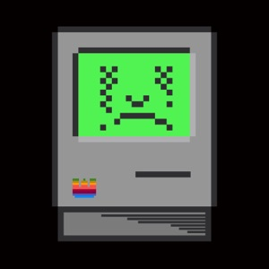
Modern Problem
凹與山
我大盧思蒨
Miao Miao Flow(盧思蒨)
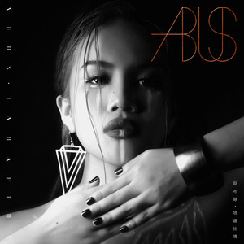
ABUS
Abus
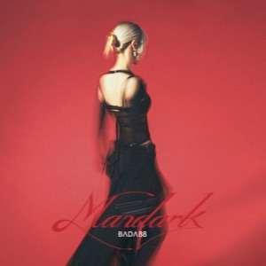
BADA88
MANDARK
TALENT
鶴 The Crane
最佳樂手獎
In the Cave
許郁瑛
樂器：鋼琴、電鋼琴、合成器、效果器
製作名單
樂器：鋼琴、電鋼琴、合成器、效果器
我大盧思蒨
Miao Miao Flow(盧思蒨)
樂器：小提琴、五弦琴
製作名單
樂器：小提琴、五弦琴

後設時空共構 Meta, Construct within’ Spaces
Sonic Deadhorse(鄭各均)
樂器：吉他、吉他合成器、電腦編程、現場電子
製作名單
樂器：吉他、吉他合成器、電腦編程、現場電子
後設時空共構 Meta, Construct within’ Spaces
謝明諺
樂器：薩克斯風、長笛、印度笛
製作名單
樂器：薩克斯風、長笛、印度笛

棲居在溪源之上
蔡巽洋
樂器：木吉他
製作名單
樂器：木吉他
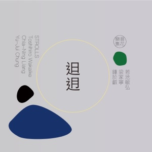
𨑨迌
若池敏弘
樂器：艾斯拉吉琴、塔布拉鼓
製作名單
樂器：艾斯拉吉琴、塔布拉鼓
𨑨迌
鍾於叡
樂器：二胡
製作名單
樂器：二胡
你會永遠活在我的歌裡
蘇珮卿
樂器：主唱、豎琴、鋼琴、長笛、印度笛、合成器、合聲
製作名單
樂器：主唱、豎琴、鋼琴、長笛、印度笛、合成器、合聲
最佳現場演出獎
男子漢一匹 / 腰束奶凸尻川硬邦邦 / 心
阿跨面
OPEN JADE!
JADE
DESERVE / NOVA / LOVE MYSELF
Gummy B
邵大倫《變身》2023大港開唱
邵大倫
A_Root同根生《邊緣轉生術》HOLY GAZAI發片專場演唱會
A_Root同根生
【衛武營小時光】跑跑機器人《時間密碼》
Go Go Machine Orchestra
亞洲創作音樂獎

今日宜著迷
王澳珂

火星電台III
火星電台

窄路微塵 電影原聲配樂
黃衍仁
RhizomE x Ju Ju
Ham Tanid(Tanid Sintaratana)

Goodbye
東京塩麹
類型音樂獎項
14 個獎項最佳搖滾專輯獎

孝順一族
孝順一族

Sinking Fate
Doodle
一念三千
Dharma 達摩樂隊
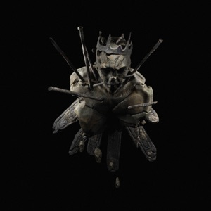
ADICA
ØZI
最佳搖滾歌曲獎

Tina's Hausu
王若琳
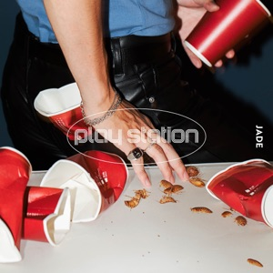
Play Station
JADE
吃拉麵請勿解壓縮
Miao Miao Flow(盧思蒨)

人間條件
滅火器

我想要一台車
露波合唱團
最佳民謠專輯獎

目麻
黃瑋傑

愛人走吧
嚴梵
𨑨迌
菩花樂集
女人島
Ado阿洛
最佳民謠歌曲獎

望
邱淑蟬
Lucy
高真 TRU
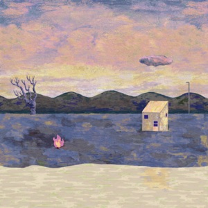
我在愛情的盡頭看見了你和我
老王樂隊
My Inner Palace
蘇珮卿
O kanatal no fafahiyan 女人島
Ado阿洛
最佳嘻哈專輯獎
歌佈靈的奇妙電台
小人
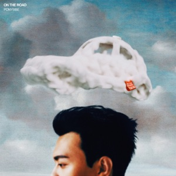
On The Road
PONY5IBE
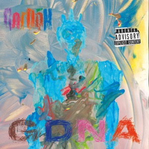
GDNA
國蛋

我這裡有一批很純的你要不要 Ita
葛西瓦
最佳嘻哈歌曲獎

Alexis
Majin

敦化南路 (Revisit)
Gummy B

得意的一天 A no is a no ft. 陳嫺靜 - Netflix《人選之人—造浪者》片尾曲
Leo王

流水帳
熊仔
White Noise ft. Soft Lipa
國蛋
最佳電音專輯獎
In the Cave
許郁瑛
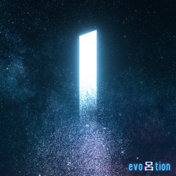
evo呂tion
呂紹淳
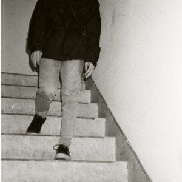
Detector
Wring Out Laura
最佳電音歌曲獎
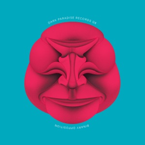
暗光鳥 feat. 許郁瑛
程杰 / 黃瑞豐
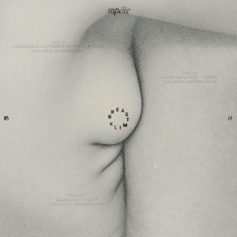
一一
Sophie Lu (呂菱瑄)
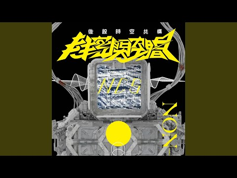
Complex Person 複雜的人
非／密閉空間 Non-Confined Space

Symbolic Dimension 符號次元
非／密閉空間 Non-Confined Space
8ODY
MANDARK
製作名單
共同創作人：OOG
最佳爵士專輯獎
我偏愛
方斯由
後設時空共構 Meta, Construct within’ Spaces
非／密閉空間 Non-Confined Space

一種分析辣椒素的方法
dongyi
最佳爵士歌曲獎
在阿姆斯特丹騎腳踏車
方斯由
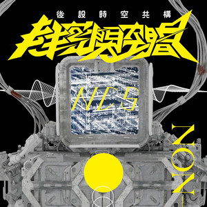
I.C.E. 心流攻性防壁
非／密閉空間 Non-Confined Space

In The Woods
蔡雯慧
Dark Night / Sunlight
9m88
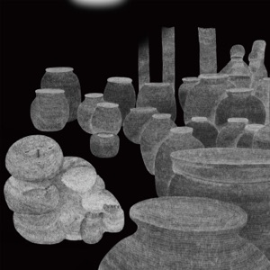
濃淡
dongyi
最佳節奏藍調專輯獎
9m88 Radio
9m88
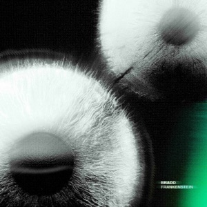
FRANKENSTEIN
BRADD
TALENT
鶴 The Crane
最佳節奏藍調歌曲獎
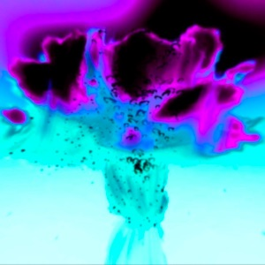
Pure Oxygen
BRADD

Finally
壞特 ?te
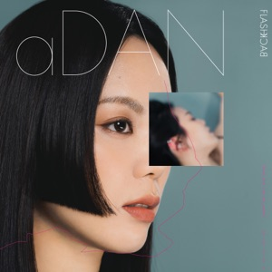
can i leave my dream
aDAN薛詒丹
Caged Birds
BRADD
不介意
鶴 The Crane
最佳另類流行專輯獎
Modern Problem
凹與山

Way out
壞特 ?te
BADA88
MANDARK

禁
曹雅雯
美麗新世界
露波合唱團
最佳另類流行歌曲獎

金黃色的
鄭宜農

只希望你在我身邊
李權哲

Αφροδίτη (feat. 林奕碩)
椅子樂團
製作名單
共同創作人：林奕碩
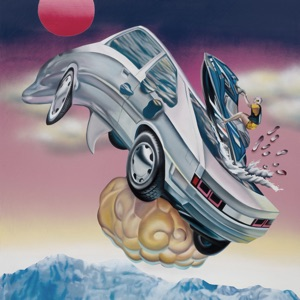
Jellyfish (feat. Michael Seyer)
落日飛車

八寶公主 Princess Bubble
A_Root同根生
評審團獎
1 個獎項評審團獎
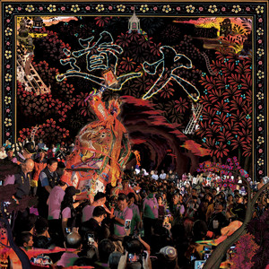
道火
Mong Tong
找不到符合的作品，換個關鍵字試試。